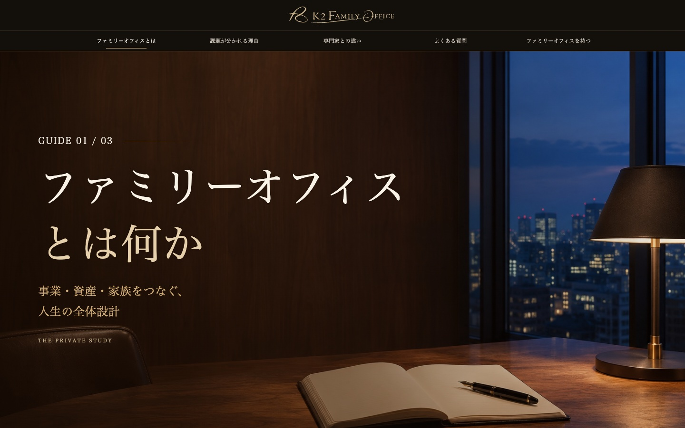
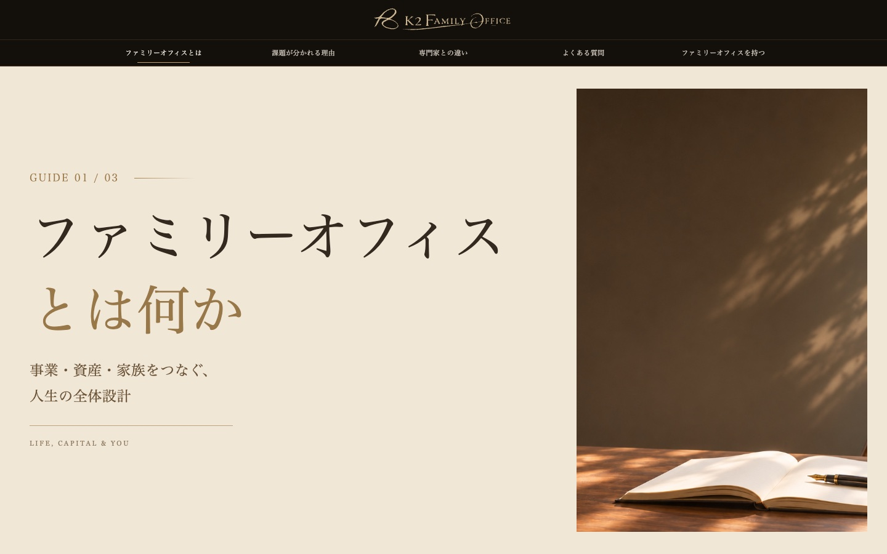
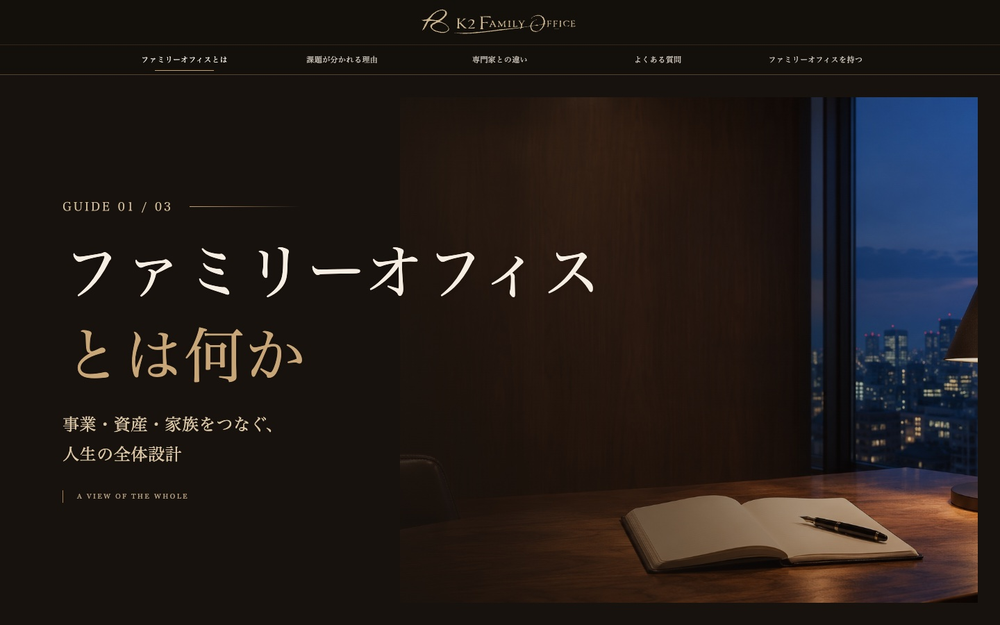

ファミリーオフィスとは何か
3つのデザイン案
同じ構成・本文を、3つの見せ方でまとめています。
写真、図解、本文の流れを、ページ全体でご確認いただけます。

A案 夜の書斎
夜の書斎とクリーム色の本文。お選びいただいたイメージに最も近い構成です。
ページ全体を見る
B案 余白のある編集ページ
明るい余白と章番号を使った、読み進めやすい編集ページの構成です。
ページ全体を見る
C案 静かな章扉
静かな写真の章扉と、明るい本文を交互に見せる落ち着いた構成です。
ページ全体を見る